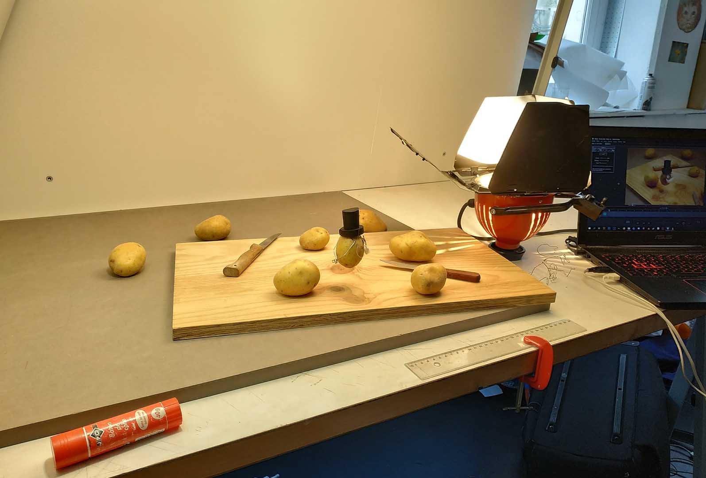

Terres lointaines
2020
Un vaisseau s’écrase sur Terre. De ses décombres sort un être humanoïde. Celui-ci va tenter de trouver ses repères dans un monde qui lui est inconnu et partir à sa découverte.
Ce court métrage, inspiré d’une bande dessinée de Moebius, Le Monde d’Édena, est réalisé dans le cadre d’un atelier de création vidéo, dont le thème était “l’hybride”.
première partie, durée 2’30
Son format très large, pensé pour une projection, permet la contemplation des paysages et met en avant le cheminement des personnages, que nous devons suivre du regard le long de l’écran.

Ce court métrage est entièrement réalisé en stop motion, avec des matériaux et aliments récupérés.




@ All right reserved @